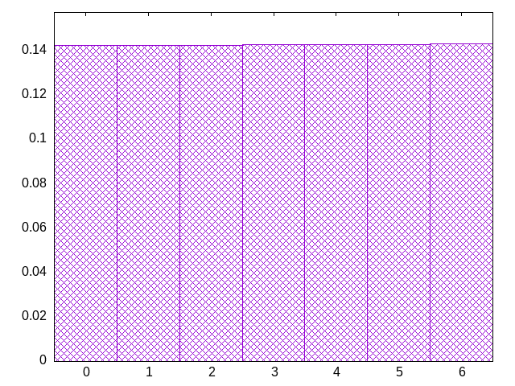
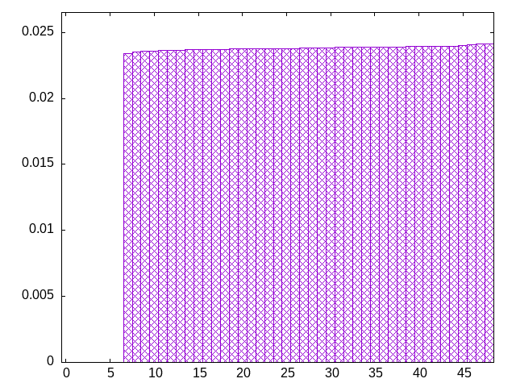
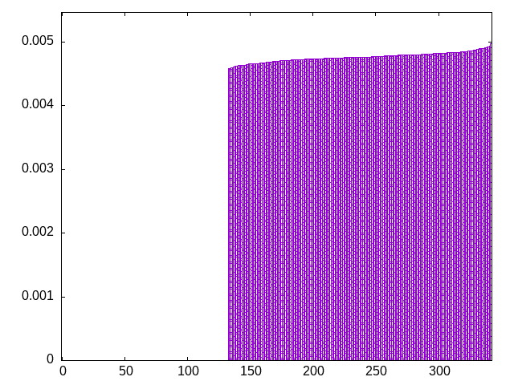
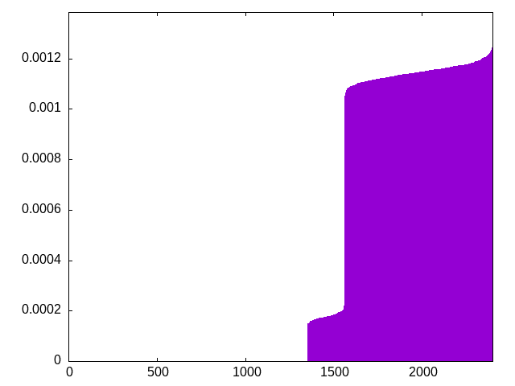
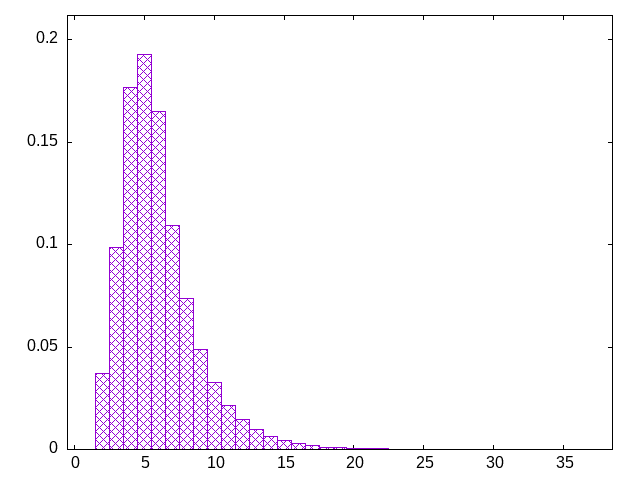

idea came from the way i choose shirts to wear
pieces are chosen from the front of the list, and replaced in blocks to the back of the list.
bagcount: the number of 7-piece bags in the list
grab: the range from which to choose next pieces
wash: how many pieces to remove before replacing them
jzoltsjzilotzisjltsziojstzliosljzosztjioszijzlojitljsotzilojitzjsiltjosiztijozliozjloisltzijostoijozlojtsiljostlzsiotlzjitslojzstjoilsozjtiloztjlsoizotsjoiljztolistjilzjtilzsijtlzotizsjotlizjoistjzliolstozlotjlositjloilstjilzojstzlioszjtoislzoistljoiszljtozjsitlztisozjtloszjisotzilstojzlitsojltsojzlsiojzlsitjozlstjozilzstiojzitolzisjlztoijlzotjstizsljtsijzoitlojsitolzsijotlztoisjztilojtzslojitlsojzitoszjoliszosltiszltolsziojzitojzsltzojsltzjiotlzsizjtoilzstolzsijtzlojitlotzjstlisjtloijtzsitolzjtisljotzsjiztloisztjsljtilojsilotzjslztolijzstziojtzijotslzotiszojisozjlstjizlojztioslizsjlosijtolzsiltoizlsoijtzislojizsljotsiltojsitzjlsotizjslojziotjzsilozjsitozsjtolizjotlszojitszjoltsiojslztoijzsltijolztisloziltsolzojsilztiozjtlizjtliszjiotlzjiszoljzitolzjtizsotjilsztoiszjtlisjztlojsoizltsoizltoslzjiotlzistojilsztolsjtizoljtiszoltjiotzsjliotsizjsltoizlosijltzostlizsotlisozitjlsztoijlztoljszilojslizlostijlotjzlitjosiztloijlosztlijotlztijstozljitzosjzitsolistjloitjsoilszjoizjsiltjzistlojislzjo
bagginess: 0.1751
bagginess6: 0.8347
distribution1_maxgap: 0.00023100000000000898
distribution2_maxgap: 0.02339102339102339
distribution3_maxgap: 0.004587009174018348
distribution4_maxgap: 0.0008260024780074339
diversity: 6.0
entropy: 9.667
evenness_diff: 5.968
evenness_same: 0.000
maxdrought: 32.9
maxflood: 1
peakdrought: 5.0
repchance: 0.0000
seq4_coverage: 0.4373
seq4_follow: 7.920
distribution1_graph:

distribution2_graph:

distribution3_graph:

distribution4_graph:

drought_graph:

similarity: (lower is more similar)
| 0.028 | shirts_smooth |
| 0.418 | tgm_tap_pure |
| 0.427 | shirts_smooth_c8 |
| 0.442 | ti |
| 0.467 | tgm_tap |
| 0.501 | shift3_5 |
| 0.519 | weight_exp_pure |
| 0.554 | bag_pure |
| 0.556 | bag |
| 0.573 | weight_exp |
| 0.598 | tgm |
| 0.613 | seamless_bag_pure |
| 0.638 | tgm_pure |
| 0.676 | weight |
| 0.712 | balanced5 |
| 0.770 | shift1_75 |
| 0.789 | weight2 |
| 0.792 | shirts_smooth_c10 |
| 0.819 | weight_lin_pure |
| 0.853 | shirts_g3w7 |
| 0.871 | seamless_deep_pure |
| 0.875 | deepbag_window4 |
| 0.877 | wet3_size12 |
| 0.941 | wet2 |
| 0.954 | shirts_smooth_c12 |
| 1.008 | deepbag_fixed4 |
| 1.068 | shift7 |
| 1.069 | bag2 |
| 1.106 | deepbag_fixed7 |
| 1.110 | shirts_smooth_c14 |
| 1.135 | shirts_g1w3 |
| 1.179 | balanced7 |
| 1.232 | seamless_bag2_pure |
| 1.290 | nes_pure |
| 1.296 | nes |
| 1.304 | deepbag_window7 |
| 1.320 | bag3 |
| 1.350 | deepbag_fixed10 |
| 1.361 | seamless_bag3_pure |
| 1.377 | bag4 |
| 1.389 | shift10_5 |
| 1.411 | wet_pure |
| 1.433 | deepbag_window10 |
| 1.435 | balanced9 |
| 1.460 | shift14 |
| 1.527 | shift21 |
| 1.556 | balanced_long_add_pure |
| 1.571 | wet |
| 1.588 | shirts_g1w7 |
| 1.604 | balanced_long_mul_pure |
| 1.755 | fullrandom |
| 1.764 | wet3 |
| 1.811 | wet2_size100 |
| 1.884 | fullrandom_pure |
| 3.918 | repeat_recent_pure |
| 5.388 | flatbag |
| 5.388 | flatbag_pure |
| 5.907 | repeat_last_pure |